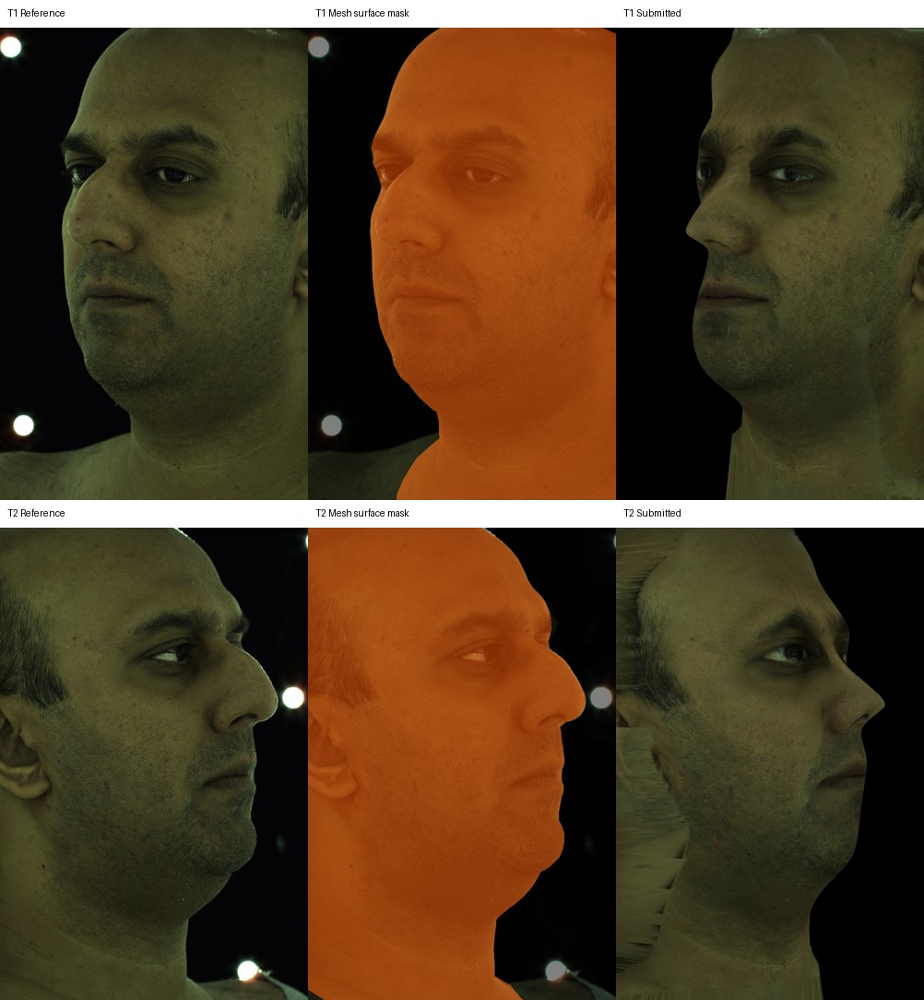

从三个说话机位，重建可换视角的动态头部
提供同一段表演的三个同步视角和原声，让 Agent 在 Blender 中重建动态三维头部，按给定的两台目标相机渲染有声视频，并交付可重新打开、继续编辑的工程；用求解时隐藏的真实画面检验最终成果。
Multiface · 同步多视角原声约 3.47 s · 104 帧3 个输入 / 2 个保留视角Blender 工程＋有声视频gpt-6.1-sol · xhigh已完成单次试跑总分采用本案例约定的事后线性换算，未经专家校准；它不是准确率，也不能与论文或其他案例直接排名。原始指标与换算公式见第四节。
一、任务定义
委托场景：工作室只有一段短表演的三个同步机位，希望补出另外两个机位，并把人物保留为可编辑的动态三维资产。难点在于：输入视角上的外观、三维表面和时变运动必须在同一套相机标定下保持一致。
给 Agent 的材料
| 材料 | 内容 | 用途 |
|---|---|---|
views/I1–I3/ | 每机位 104 张原始 PNG，1334×2048；附无声预览 | 恢复外观、轮廓、深度和随时间变化的运动 |
speech.wav | 48 kHz 单声道原声，约 3.466 秒 | 原样保留声音并与动画时间轴对齐 |
cameras.json | 三个输入与两个目标机位的 K、R、t、逐帧时间 | 明确渲染哪两个机位，无需猜测相机 |
要求交付
| 文件 | 验收要求 |
|---|---|
scene.blend | 有实际深度的动态头部；相机严格命名为 T1、T2；工程可独立重开并重新渲染 |
T1.mp4、T2.mp4 | 每支 104 帧、30 fps、668×1024，H.264＋AAC；保留原声及统一起点 |
build.py、assets/、README.md | 依赖随包提供，路径可移植；说明方法、复现命令与已知限制 |
运行条件与时间轴约定
本次使用 Codex CLI 0.142.4，模型 gpt-6.1-sol，reasoning effort 为 xhigh；CPU 4 核、8 GB，提供 Python / NumPy / Pillow、FFmpeg 和后台 Blender 5.3，无 GPU、预训练重建服务或普通互联网。可以写代码、看图片和分析波形；本次工具环境没有原生音频输入。
未设最终外部墙钟时限，Agent 自行完成，累计 3047.39 秒（约 50 分 47 秒）、107 次工具调用。素材时长来自数据本身。原帧编号虽然逐次增加 3，相对时间仍采用排序序号 / 30；第 1 帧为 t=0，第 104 帧为 t=103/30 秒。
任务保留原声音轨，不要求生成新语音；五声道原录音的物理声道含义未核实，因此不把它当作空间声场真值。
二、材料与机位
以下三个视角来自同一次表演，均为求解可见材料。网页预览缩小到 668×1024，并附上题目原声；实际提供给 Agent 的是原分辨率无损帧和独立音轨。
题目原声
与封存题包中的 speech.wav 字节一致。原录音第 4 声道（从 0 开始计数）提取为单声道，未改变增益或时间。
Agent 如何知道要生成哪个视角？
目标机位由相机内外参数唯一指定。投影约定为 p ∼ K [R | t] X；输出按原标定比例缩放 K，不额外裁切、居中或稳定画面。T1、T2 位于输入覆盖范围内的两侧斜视角，属于保留视角重建测试。
| 角色 | 视角 ID | 原相机编号 | 求解时可见 |
|---|---|---|---|
| 输入 | I1 / I2 / I3 | 400053 / 400029 / 400059 | 画面＋标定 |
| 目标 | T1 / T2 | 400039 / 400018 | 仅标定；真实画面隔离 |
查看完整相机与逐帧时间 JSON。下节公开的目标原片仅用于展示本次已完成实验的结果；它们不曾进入求解材料。
三、实际交付：保留视角原片与重建成片
左右使用同一时间轴，按「同步播放」查看口型和头部运动；声音仅从右侧重建片播放。网页原片是便于播放的压缩预览，重建 MP4 保持封存提交字节不变；评分直接使用原始无损参考帧。
T1 · 目标相机 400039
T2 · 目标相机 400018
实际方法与交付说明
从跨机位特征对应点三角化获取深度，以正则化曲面与头部轮廓约束构建头颈网格，再把多尺度 Lucas–Kanade 图像运动转换成逐顶点三维位移。三个输入序列在同一世界坐标表面按法线和遮挡置信度混合，权重不随目标相机切换。使用自发光材质保留采集光照。
该方法没有独立牙齿、舌头和完整口腔拓扑，部分深度和不可见区域依赖近似。查看 Agent 原始交付说明 · 下载制作与评测代码
四、评分依据与实测结果
1. 四项视觉指标，占 60 分
两个目标机位各 104 帧，固定对应到 668×1024、30 fps。参考为原始 PNG 的固定 BICUBIC 缩放，预测从封存 MP4 解码；不进行配准、颜色拟合、裁切或最有利时间搜索。以下为整帧结果。
| 目标视角 | PSNR ↑ (dB) | SSIM ↑ | LPIPS-Alex ↓ | 视频 JOD ↑ |
|---|---|---|---|---|
| T1 | 19.9052 | 0.592226 | 0.304221 | 3.687023 |
| T2 | 20.5448 | 0.611057 | 0.328259 | 3.690561 |
| 平均 | 20.2250 | 0.601642 | 0.316240 | 3.688792 |
SSIM：Gaussian σ=1.5、11 像素窗口；LPIPS：官方 0.1.4 / AlexNet / v0.1 权重；JOD：FovVideoVDP 1.2.2，standard_fhd、非中心凹、实际 30 fps。JOD 是全参考时空感知质量，不能单独代表口型正确率。
2. 音画同步，占 40 分
使用官方 SyncNet v2，并以 S3FD 跟踪和裁剪人脸。按真实时间从 30 fps 重采样为 25 fps，音轨转为 16 kHz 单声道；搜索 ±600 ms 的整体偏移。每片使用 81 个重叠窗口，偏移分辨率为 40 ms。
| 视角 | 视频 | 最佳 AV 偏移 (ms) | LSE-D ↓ | LSE-C ↑ |
|---|---|---|---|---|
| T1 | 原片 | 0 | 6.1520 | 6.9784 |
| T1 | 生成片 | 0 | 7.2491 | 5.5377 |
| T2 | 原片 | 0 | 7.3429 | 6.2542 |
| T2 | 生成片 | 0 | 7.8422 | 5.1490 |
LSE-D 为搜索到的最小特征距离，LSE-C 为距离曲线中位数减最小值，均不是概率。四段视频的人脸检测覆盖率均为 100%；原片人工提前 / 延后 200、400 ms 的 8 项检查全部检出预期偏移。短片轨迹过滤改为至少 50 帧、覆盖率至少 80%。
3. 百分制换算
| 分项 | 原始平均值 | 归一化规则 | 得分 | 满分 |
|---|---|---|---|---|
| PSNR | 20.225031 | clip(PSNR / 40) | 7.5844 | 15 |
| SSIM | 0.601642 | clip(SSIM) | 9.0246 | 15 |
| LPIPS | 0.316240 | clip(1 − LPIPS) | 10.2564 | 15 |
| JOD | 3.688792 | clip(JOD / 10) | 5.5332 | 15 |
| AV_sync | 0.874897 | clip((D静止 − D生成) / (D静止 − D原片)) | 34.9959 | 40 |
| 合计 | 67.3945 | 100 | ||
clip 将值截断到 [0,1]。先逐视角归一化并加权，再等权平均 T1、T2，最后四舍五入。音画同步公式使用零偏移距离 D0（本次最佳偏移恰为 0），以各自原片为 100%、同视角静止口型为 0%；归一化均值为 0.874897。
逐视角总分、区域补充与复现文件
T1：视觉 32.3151 / 60，音画 32.9371 / 40，总计 65.2521；T2：视觉 32.4821 / 60，音画 37.0547 / 40，总计 69.5368。均值 67.3945。
扫描表面投影区域的补充平均值：PSNR 23.8772 dB，SSIM 0.727488，LPIPS 0.304868；该区域不等于精确人像分割、共同可见区域或嘴部专项区域，不用于本页合成分。
五、结果分析
Agent 交出了实际三维工程和两个目标机位成片，但鼻部轮廓、下颌与侧面投影存在偏差，嘴部和边缘可见重影。工程能够渲染，不代表几何与外观达到扫描质量。
两个视角最佳偏移都为 0 ms，音画项取得 35.00 / 40；四项视觉合计只有 32.40 / 60。前者不应掩盖嘴唇几何、口腔结构和纹理接缝的问题。
本例只有约 3.47 秒、一个人物、一段表演，且目标机位位于输入覆盖范围内。没有对新的台词、长时漂移、未观测后脑或自由相机轨迹开展测试。
查看固定帧与 SyncNet 裁剪证据


案例文件
- 冻结题面原文 — 实际求解指令
- cameras.json — 五台相机与帧时间
- 制作与评测代码 ZIP — 真实提交代码与评测入口
- 完整 Blender 交付包 — 工程、纹理、视频及代码
- 视觉原始结果 JSON — 全部视角及补充区域
- 同步原始结果 JSON — 控制实验与偏移曲线
- 总分计算 JSON — 权重、精确数值和输入哈希
- T1 逐帧 CSV / T2 逐帧 CSV
冻结题面保留了原始试跑评分段落；本页最终采用「四项视觉 60 分＋音画同步 40 分」，具体公式以上表及 score.json 为准。网页没有公开未经审核的原始运行日志、凭据或隐藏三维网格。